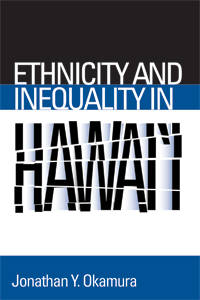

In Hawai'i, ethnicity rather than race structures social and economic inequalities
In Hawai'i, ethnicity rather than race structures social and economic inequalities


 In Hawai'i, ethnicity rather than race structures social and economic inequalities
In Hawai'i, ethnicity rather than race structures social and economic inequalities

|  |
Ethnicity and Inequality in Hawai'iJonathan Y. Okamurapaper EAN: 978-1-59213-756-5 (ISBN: 1592137563) |
"What is most compelling about Ethnicity and Inequality in Hawai'i is the detail and historiography. Okamura’s knowledge of local issues and ethnic identity in Hawai'i is impressive. This book will make a wonderful contribution to conversations about race and ethnicity in American studies, ethnic studies, and perhaps sociology too."
—Dana Takagi, Department of Sociology, University of California, Santa Cruz"Hawai'i is widely viewed as a multicultural paradise where people live in racial harmony. But Jonathan Okamura takes a different tack. With attention to detail and analytical rigor, he forcefully argues that Hawai'i is characterized by a system of ethnic inequality that limits life chances and economic opportunity. This is a bold and thought-provoking study that deserves a broad readership."
—Franklin Ng, California State University, Fresno
Challenging the dominant view of Hawai'i as a "multicultural model"—a place of ethnic tolerance and equality—Jonathan Okamura examines how ethnic inequality is structured and maintained in island society. He finds that ethnicity, not race or class, signifies difference for Hawaii’s people and therefore structures their social relations. In Hawai'i, residents attribute greater social significance to the presumed cultural differences among ethnic groups than to more obvious physical differences, such as skin color.
According to Okamura, ethnicity regulates disparities in access to resources, rewards, and privileges among ethnic groups, as he demonstrates in his analysis of socioeconomic and educational inequalities in the state. He shows that socially and economically dominant ethnic groups—Chinese Americans, Japanese Americans, and whites—have stigmatized and subjugated the islands’ other ethnic groups—especially Native Hawaiians, Filipino Americans, and Samoans. He demonstrates how ethnic stereotypes have been deployed against ethnic minorities and how these groups have contested their subordinate political and economic status by articulating new identities for themselves.
Excerpt available at www.temple.edu/tempress
"In a carefully documented study, Okamura demonstrates persistent ethnic inequality characterized by stereotypes in the press, criminal justice unfairness, and differential access to scarce goods and resources.... [R]ecommended for its insight into how racial/ethnic conflicts in the continental US may evolve, as well as for its less sunny view of Hawai'i."
—Choice
"[T]his book is a fascinating and provocative read. One is left with the overall sense that Hawaii has at least the potential to truly achieve the ideal of a society based on ethnic harmony and unfettered opportunity for all."
—Asian Affairs
“Okamura’s analysis is clear, insightful, and interesting. His training in anthropology, combined with many years living and working on the islands, have clearly given him deep insight into ethnic relations in Hawaii and, more generally, into Hawaiian culture.”
—Contemporary Sociology
"[This book] is a much-needed corrective. Anyone who attempts to invoke Hawaii as an example of racial harmony should be challenged—if they are not familiar with Okamura’s book, they are not likely to have contemplated all of the facts in forming their opinions."
—The Journal of American Ethnic History
"Ethnicity and Inequality in Hawai‘i comes to us at a time when it is most sorely needed.... Although written before the election of Obama, Okamura’s work provides a long awaited response to [the] Hawai‘i multicultural model. In the book, he challenges the reader to question how and why the life chances and opportunities for Native Hawaiian, Samoan, and Filipino American youth differ substantially from their Chinese American, Japanese American, and White counterparts. Okamura demonstrates convincingly that 'ethnic inequality, rather than equality of opportunity, is becoming further entrenched in Hawai‘i.' Okamura’s new work gives us a much needed reality check on life in 'paradise,' while also providing a valuable contribution to the comparative study of race and ethnicity.... Okamura opens up new lines of inquiry that examine how power and privilege operate between and within interethnic and intraracial group formations, and continue to resonate at the institutional level."
—Amerasia
1. Introduction
2. Changing Ethnic Differences
3. Socioeconomic Inequality and Ethnicity
4. Educational Inequality and Ethnicity
5. Constructing Ethnic Identities, Constructing Differences
6. Japanese Americans: Toward Symbolic Identity
7. Filipino Americans: Model Minority or Dog Eaters?
8. Conclusion
Notes
References
Index
Jonathan Y. Okamura is an Associate Professor in the Department of Ethnic Studies at the University of Hawai'i at Manoa. A social anthropologist, he is the author of Imagining the Filipino American Diaspora: Transnational Relations, Identities, and Communities.
Race and Ethnicity
Asian American Studies
Sociology
Asian American History and Culture, edited by K. Scott Wong, Linda Trinh Võ, and Cathy Schlund-Vials.
Founded by Sucheng Chan in 1991, the Asian American History and Culture, series has sponsored innovative scholarship that has redefined, expanded, and advanced the field of Asian American studies while strengthening its links to related areas of scholarly inquiry and engaged critique. Like the field from which it emerged, the series remains rooted in the social sciences and humanities, encompassing multiple regions, formations, communities, and identities. Extending the vision of founding editor Sucheng Chan and emeriti editor Michael Omi and David Palumbo-Liu, series editors K. Scott Wong, Linda Trinh Võ, and Cathy Schlund-Vials continue to develop a foundational collection that embodies a range of theoretical and methodological approaches to Asian American studies.
© 2015 Temple University. All Rights Reserved. This page: http://www.temple.edu/tempress/titles/1963_reg.html.